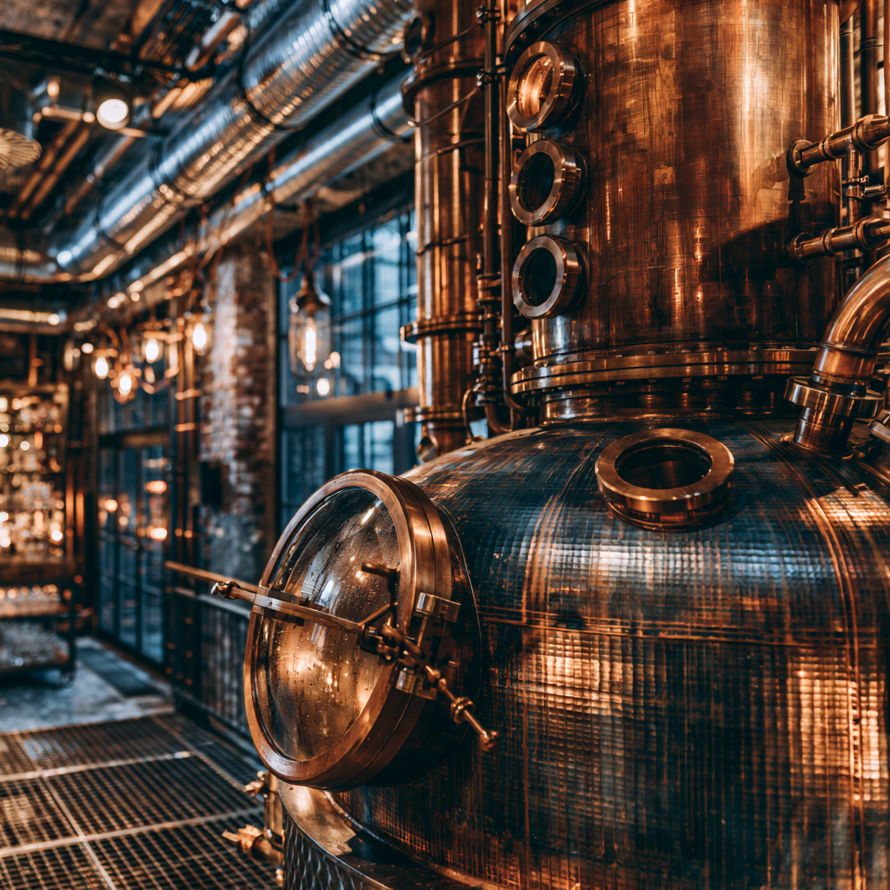

Signature spirits
Rye whiskey, vodka, and Amber Bitter anchor the menu.
A small line of proprietary spirits gives the cocktail list its spine: spicy, smooth rye whiskey, clean small-batch vodka, and an Eastern European-inspired bitter aperitivo.
Rye Whiskey
Small batch, spice-led, and built as the foundation of the cocktail program.
Vodka
Premium, clean, and precise enough for a minimalist martini.
Amber Bitter
Bitter orange, gentian, black currant, green walnut, juniper, spruce tip, angelica, rowan berry, and subtle honey.
